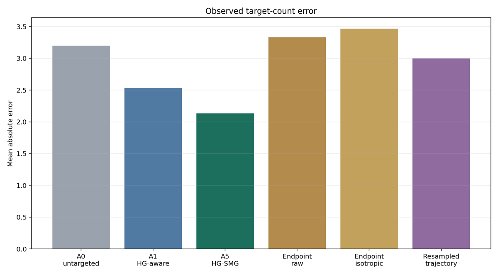
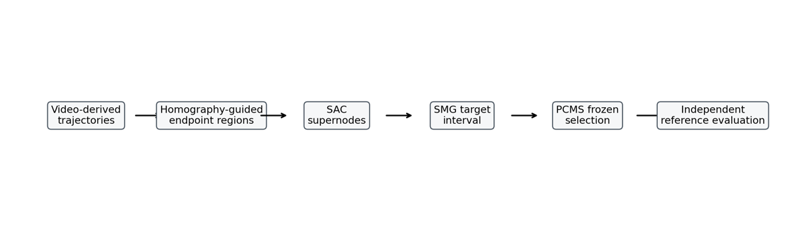
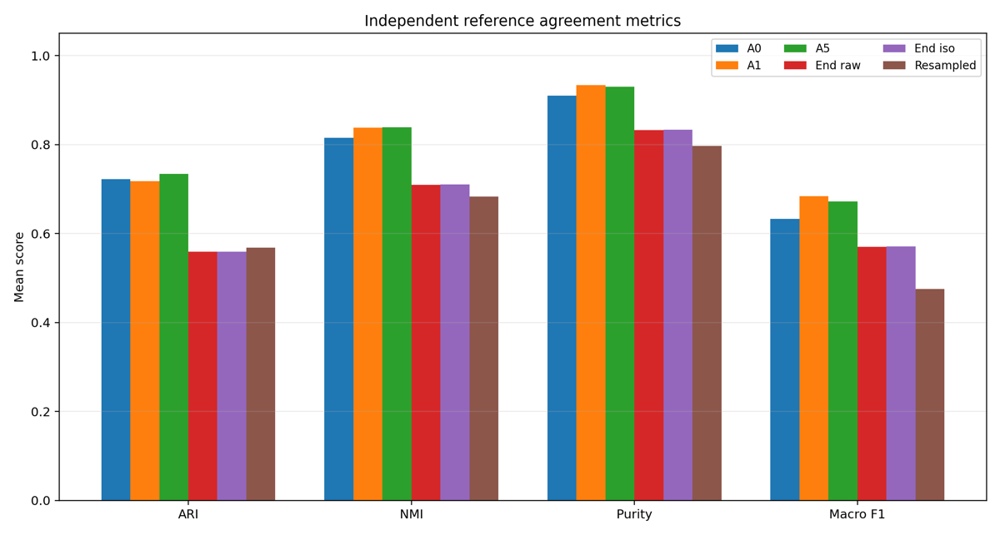
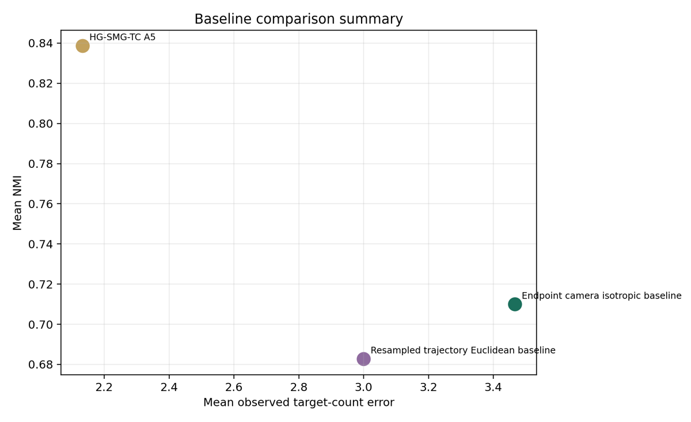
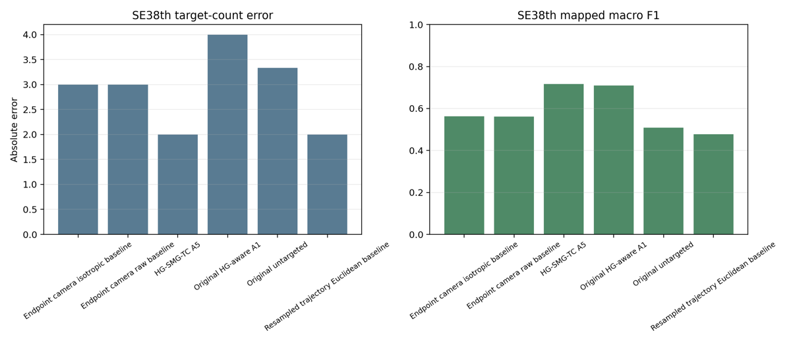

Target-count alignment
Scene-level comparison of observed target-count error.
Future Transportation revision · trajectory clustering · reproducible research
A manuscript-specific evidence and reproducibility package for clustering vehicle trajectories at five Bellevue intersections.
HG-SMG-TC combines homography-guided endpoint micro-mode discovery, semantic approach consolidation, semantic maneuver graph construction, uncertainty-aware maneuver-count priors and prior-constrained model selection.
The evaluation is limited to five Bellevue scenes and uses a leakage-controlled split protocol. The method is compared against original HG-aware selection and trajectory-clustering baselines using independently generated polygon-rule reference labels.

| Method family | Target error | NMI | Macro F1 | Outlier % |
|---|---|---|---|---|
| Original untargeted A0 | 3.2000 | 0.8155 | 0.6328 | 15.56 |
| Original HG-aware A1 | 2.5333 | 0.8376 | 0.6838 | 9.94 |
| HG-SMG-TC A5 | 2.1333 | 0.8386 | 0.6723 | 10.34 |
| Endpoint isotropic baseline | 3.4667 | 0.7099 | 0.5710 | 24.43 |
| Resampled trajectory baseline | 3.0000 | 0.6827 | 0.4752 | 25.02 |
The result should be read conservatively: HG-SMG-TC improves mean target-count alignment and slightly improves NMI relative to the original HG-aware method, while macro F1 and outlier percentage show trade-offs.

Scene-level comparison of observed target-count error.

ARI, NMI, purity and mapped F1 are interpreted as independent validation metrics.

Compact summary against endpoint and resampled-trajectory baselines.

Diagnostic evidence for semantic over-segmentation and residual trade-offs.